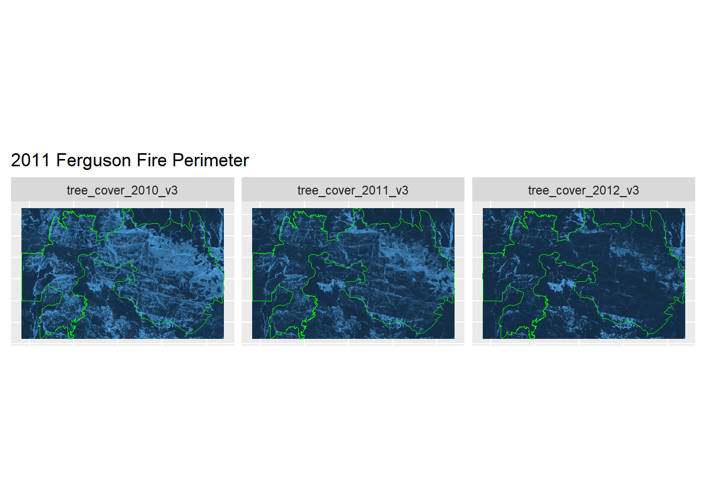
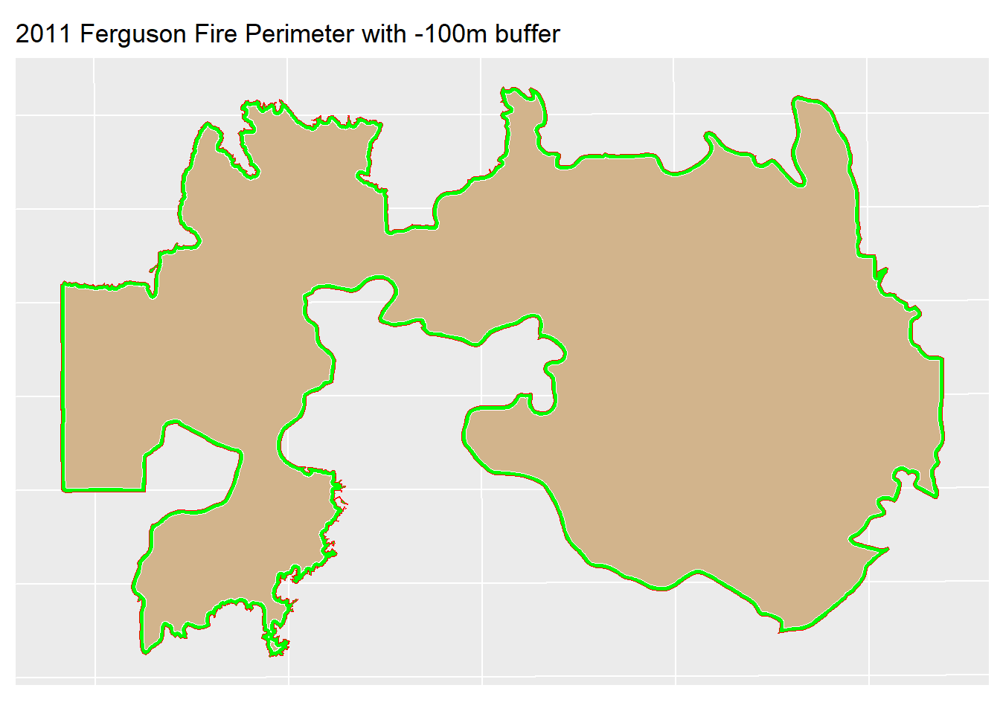
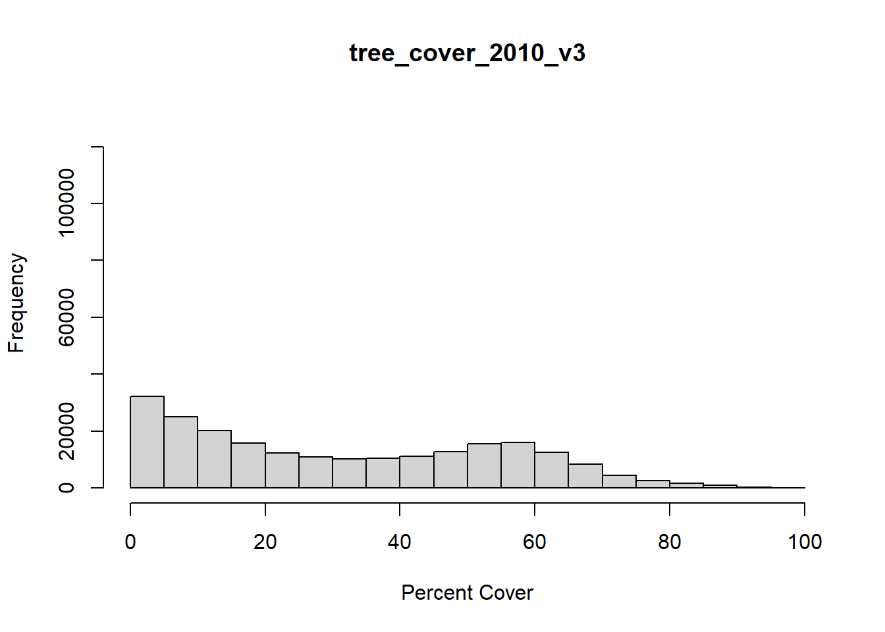
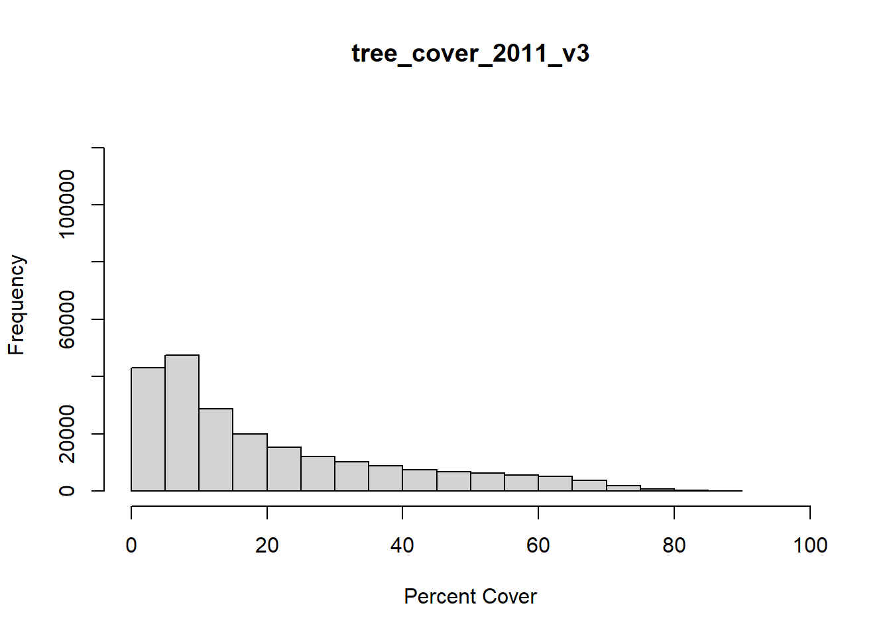
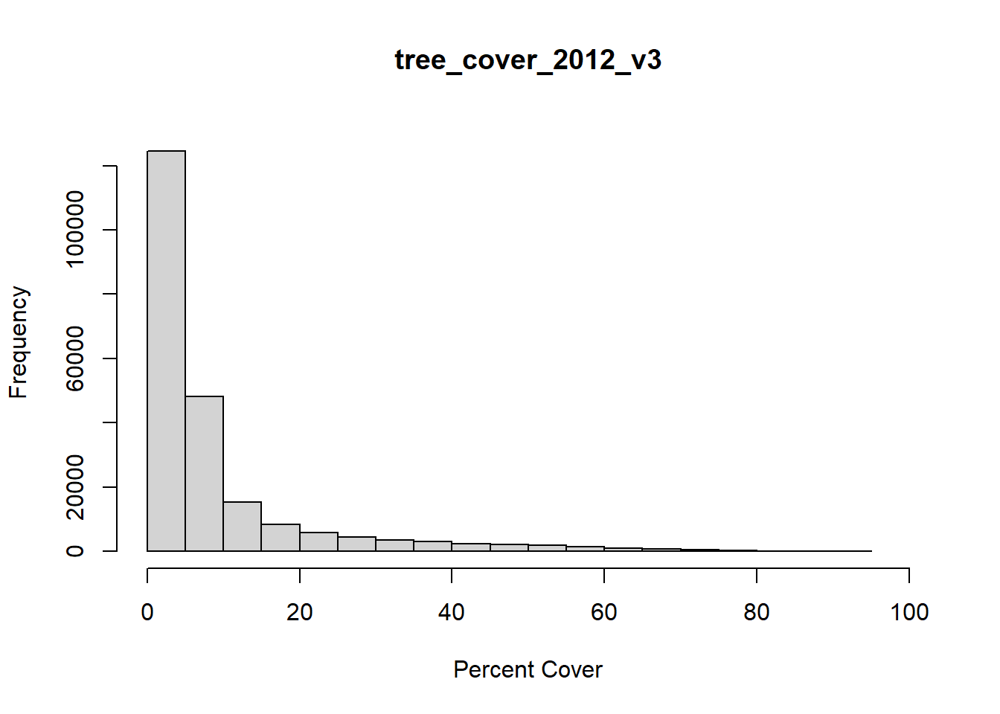
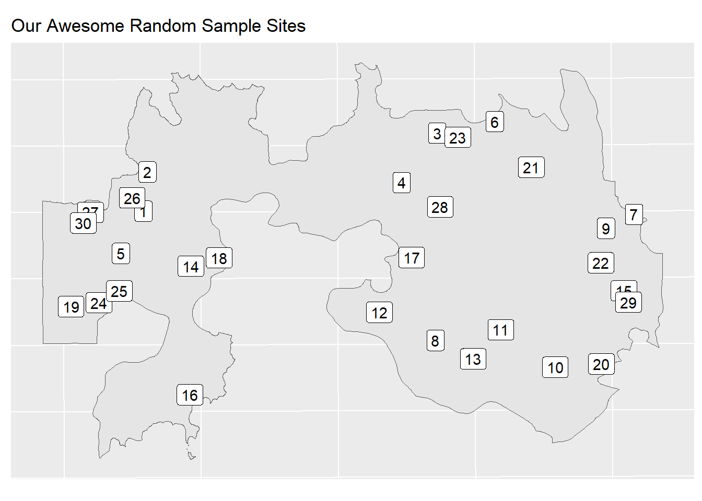

suppressWarnings({ # Just so we don't get a bunch of unnecessary messages on render
suppressPackageStartupMessages(library(tidyverse))
suppressMessages(library(rprojroot))
suppressMessages(library(sf))
suppressMessages(library(terra))
suppressMessages(library(tidyterra))
suppressMessages(library(reactable))
suppressMessages(library(reactablefmtr))
suppressMessages(library(grateful))
})
## Local stuff =================
base_path <- find_rstudio_root_file()
source_path <- file.path(base_path, "source_data//") Download and extract Rangeland Analysis Platform data for specific sites
Load libraries and set up folder paths
Code uses rprojroot library which needs to be run within a project in RStudio.
Install and load the rapr package
#remotes::install_github("brownag/rapr")
library(rapr)Make sure there is a “source_data” folder within this project - where ever you saved it locally. The following line will create one in the correct location.
Download Fire Perimeter dataset from NIFC
Save this in the “source_data” folder created above.
Load the fire perimeter data
# There's only one layer so we don't have to specify layer name for st_read
# st_layers(paste0(source_path,
# "Historic_Geomac_Perimeters_Combined_2000_2018_-7007592357689317076.gpkg"))
Fires <- st_read(paste0(source_path,
"Historic_Geomac_Perimeters_Combined_2000_2018_-7007592357689317076.gpkg"))Reading layer `US_HIST_FIRE_PERIMTRS_2000_2018_DD83' from data source
`G:\___R___\RAP\source_data\Historic_Geomac_Perimeters_Combined_2000_2018_-7007592357689317076.gpkg'
using driver `GPKG'Warning in CPL_read_ogr(dsn, layer, query, as.character(options), quiet, : GDAL
Message 1: Non-conformant content for record 1 in column datecurrent,
2018-02-14T00:00:00.0Z, successfully parsedSimple feature collection with 23776 features and 20 fields
Geometry type: MULTIPOLYGON
Dimension: XY
Bounding box: xmin: -19908540 ymin: 377194.8 xmax: -7272854 ymax: 11120720
Projected CRS: WGS 84 / Pseudo-MercatorFilter data set for the Ferguson fire @ WMNWR in 2011
Firefighters Have Comanche County Wildfires Under Control
Two construction companies fined for Wichita Mountains fire
Performance of Burn-Severity Metrics and Classification in Oak Woodlands and Grasslands
Ferguson <- Fires |> filter(incidentname == "Ferguson" & state == "OK")
Ferguson <- sf::st_transform(Ferguson, crs = 4326) # Set crs so it lines up with RAP
#st_crs(Ferguson)Download RAP data
The get_rap() function calculates the extent of the polygon (Ferguson) and uses that as an AOI.
Plot the rap layers along with the Ferguson perimeter to make sure they land right - no crs issues. Downloads all of the cover layers but filters to only the tree cover layers
# Turn this off after running the first time so you don't spam the server
res <- get_rap(
Ferguson, # creates a bounding box of this polygon - you can specify a bounding box directly - see docs
version = "v3",
years = c(2010:2012),
# filename = "RAP.tif",
product = "vegetation-cover", # other option here is "vegetation-biomass"
progress = FALSE
)
#st_crs(res) # check crs Plot the RAP data just to check
You can already see some differences between the years.
#Layers <- names(res)# This gets the name of the indexed layer https://rspatial.github.io/terra/reference/as.list.html
Layers <- as.data.frame(names(res)) |>
filter(str_detect(names(res), "^tree")) # only interested in the tree layers
for (i in Layers) {
#This loops through all of the layers
spatter <- res |> tidyterra::select(all_of(i))# https://dieghernan.github.io/tidyterra/index.html
# Parse out parts of layer names
category <- str_extract(i, "[a-z]+")
stat <- str_extract(i, "[a-z]+_[0-9]+_[a-z][0-9]+$") |> str_extract("[a-z]+")
layerdate <- str_extract(i, "[0-9]+") |> str_remove("_")
plot_name <-
ggplot() +
tidyterra::geom_spatraster(data = spatter) +
ggplot2::geom_sf(data = Ferguson, color = "green", fill = "transparent") +
theme(legend.position = "none",
axis.title.x = element_blank(),
axis.text.x = element_blank(),
axis.ticks.x = element_blank(),
axis.text.y = element_blank(),
axis.ticks.y = element_blank()) +
ggtitle("2011 Ferguson Fire Perimeter") +
facet_wrap(~lyr)
print(plot_name)
}
Buffer the perimeter
Used -100m to avoid edge effects from roads, firebreaks etc. If I were working with movement data(GPS collars) of animals, I’d probably use a positive number and consider movement range or territory size to sort out what value to use. If the buffer is larger than the original polygon, use it in the first argument in get_rap() instead of the original. In reality -100m is probably too much but it makes it easier to see the buffer when plotting at this scale. The red line is the original Ferguson perimeter, the tan is the buffered perimeter, and the green is the difference between the two - what we buffered out.

Mask RAP layers to buffer
reProSpatter <- project(spatter, "EPSG:32614") # Has to match the polygon we're using for the mask
# st_crs(rapRaster)
# st_crs(Ferguson)
#names(reProSpatter)
layerList <- list()
for (k in names(reProSpatter)) {
maskedRap <- mask(reProSpatter[[k]]
, Ferguson_buffered_100
, inverse = FALSE
, updatevalue = NA
, touches = TRUE
# , filename=paste0(plot_path, k, ".tif")
)
df <- maskedRap
df_name <- paste(k)
assign(df_name, df, envir = .GlobalEnv) # Save individual layers to environment
layerList[[k]] <- df_name # Create a list of the layer names while we're at it
}Plot the masked layers
for (z in layerList) {
plot_name <-
ggplot() +
geom_spatraster(data = get(z)) + # layers are coming from the environment now
scale_fill_viridis_c( na.value = "transparent", limits = c(NA, 100)) +
theme(#legend.position = "none",
axis.title.x = element_blank(),
axis.text.x = element_blank(),
axis.ticks.x = element_blank(),
axis.text.y = element_blank(),
axis.ticks.y = element_blank()) +
labs(
fill = "",
title = paste0("Ferguson Fire 2011"),
subtitle = z
)
print(plot_name)
}


Create Histograms
We can definitely see some changes between years now.
for (y in layerList) {
hist(get(y)
,plot = TRUE
, xlim = c(0,100)
, ylim = c(0,130000)
, xlab = "Percent Cover")
}


Calculate and plot focal means for each layer
Calculating the mean across a 15X15 matrix and storing that value in the middle pixel of that matrix. The resolution of the imagery comes into play here - RAP has 30m resolution so a 15X15 matrix represents a 450mX450 area on the ground. Size and mobility/territoriality of a target organism might influence the choice of matrix size as well. I chose 15X15 just for dramatic effect - makes it easier to see the change.
focalities <- list()
for (n in layerList) {
focalities[[n]] <-
focal(
get(n),
w = matrix(1, nrow = 15, ncol = 15),
#w = matrix(1, nrow = 3, ncol = 3),
fun = mean,
na.rm = FALSE)
plot_name <- # We're plotting as we calculate the focal mean for each layer
ggplot() +
#geom_spatraster(data = get(n)) +
geom_spatraster(data = focalities[[n]]) +
scale_fill_viridis_c( na.value = "transparent", limits = c(NA, 100)) +
theme(#legend.position = "none",
axis.title.x = element_blank(),
axis.text.x = element_blank(),
axis.ticks.x = element_blank(),
axis.text.y = element_blank(),
axis.ticks.y = element_blank()) +
labs(
fill = "",
title = n,
subtitle = "Focal Mean"
)
print(plot_name)
}


Create some random sites and pretend they are acoustic or camera trap sites.
set.seed(67) # What happens if this isn't set or set to something different?
RandomSampleSites <- st_sample(Ferguson_buffered_100, size = 30, type = "random")
# Converts to an sf object and adds SiteID column
RandomSampleSites <- st_as_sf(RandomSampleSites) |> mutate("SiteID" = row_number())
plot_name <-
ggplot() +
geom_spatvector(data = Ferguson_buffered_100) +
geom_spatvector_label(data = RandomSampleSites, aes(label = SiteID)) +
theme(#legend.position = "none",
axis.title.x = element_blank(),
axis.text.x = element_blank(),
axis.ticks.x = element_blank(),
axis.title.y = element_blank(),
axis.text.y = element_blank(),
axis.ticks.y = element_blank()) +
labs(
fill = "",
title = "Our Awesome Random Sample Sites",
#subtitle = "Focal Mean"
)
print(plot_name) 
Extract RAP based on sites
Focal_df <- list() # create an empty list
for (p in layerList) {
Focal_df[[p]] <- # add a data frame to list on each loop
round(
extract( # we end up with a list of data frames
get(p),
RandomSampleSites)
,2)
}
Focal_df <- bind_rows(Focal_df) |> # converts from a list to a single data frame
rename("SiteID" = "ID")We’ll need to rearrange the data frame a bit for the plot.
First we’ll pivot the year and focal mean value into two columns then we’ll clean up the data in the year column so that it only has the year.
Focal_pivot <- Focal_df |> pivot_longer(c(2:4), names_to = "Year", values_to = "Value", values_drop_na = TRUE)
# Focal_separate <- Focal_pivot |>
# separate_wider_delim(Year, # Just to show what is going on - we're really just after "Year"
# names = c("tree", "cover", "Year", "version"),
# delim = "_")
Focal_separate <- Focal_pivot |>
separate_wider_delim(Year, # Remove the extra columns in one go
names = c(NA, NA, "Year", NA),
delim = "_"
#,too_many = "debug"
)
reactable(Focal_separate) |> add_title(title = "Focal Mean Values") |>
add_subtitle((subtitle = "Acoustic and Camera Trap Sites"))Focal Mean Values
Acoustic and Camera Trap Sites
Plot a line graph of the data for all sites and years
There’s an obvious decline in woody cover over our study period although some weird stuff is happening in 2011 - the year of the fire. Why? Quite a lot of things could be causing problems. Were this earlier in the season with higher precipitation some of those large oaks could have leafed back out and new leaves might have fooled the sensors into reporting greener values than were the case. Trees often die over an extended period of time when stressed by fire - some of the those trees were dead, they just didn’t know it yet. Fire intensity is likely a factor in how stressed a tree gets, so may influence how fast they die. If those factors don’t confuse issues enough, we should consider how the data gets collected. RAP data incorporates multiple imagery passes as well as physical “on the ground” vegetation sampling. These occur over time and can’t really be sorted out from a single image. Some may have occurred prior to the fire and others afterward. So how do we deal with the 2011 data? You’re research question is likely to be something to the effect of “What is the response of”X” to the fire?“, so you really just need to know what the conditions were prior to the fire versus after - you may not need to fool with the 2011 data.
Focal_separate$SiteID <- as.factor(
as.character(Focal_separate$SiteID)
) # changes ID to character to use for labels
#levels(Focal_separate$SiteID)
Focal_separate$SiteID <- factor(Focal_separate$SiteID, levels = c(1:30)) # ordering ID for plot
plot_name<-
ggplot(Focal_separate) +
#geom_point() +
geom_line(aes(Year, Value, group = SiteID, col = SiteID)) +
scale_color_viridis_d() +
ylab("Percent Cover") +
#theme(legend.position = "none") +
labs(
fill = "",
title = "Percent Tree Cover by Year Based on RAP data",
subtitle = "2011 Ferguson Fire"
)
print(plot_name) 
pkgs <- cite_packages(output = "table", out.dir = ".")
knitr::kable(pkgs)| Package | Version | Citation |
|---|---|---|
| base | 4.4.2 | R Core Team (2024) |
| knitr | 1.49 | Xie (2014); Xie (2015); Xie (2024) |
| rapr | 0.1.2 | Robinson et al. (2019); Jones et al. (2021); Allred et al. (2021); Brown (n.d.) |
| reactable | 0.4.4 | Lin (2023) |
| reactablefmtr | 2.0.0 | Cuilla (2022) |
| rmarkdown | 2.29 | Xie, Allaire, and Grolemund (2018); Xie, Dervieux, and Riederer (2020); Allaire et al. (2024) |
| rprojroot | 2.0.4 | Müller (2023) |
| sf | 1.0.19 | Pebesma (2018); Pebesma and Bivand (2023) |
| terra | 1.8.29 | Hijmans (2025) |
| tidyterra | 0.7.0 | Hernangómez (2023) |
| tidyverse | 2.0.0 | Wickham et al. (2019) |
References
Allaire, JJ, Yihui Xie, Christophe Dervieux, Jonathan McPherson, Javier Luraschi, Kevin Ushey, Aron Atkins, et al. 2024. rmarkdown: Dynamic Documents for r. https://github.com/rstudio/rmarkdown.
Allred, B. W., B. T. Bestelmeyer, C. S. Boyd, C. Brown, K. W. Davies, L. M. Ellsworth, et al. 2021. “Improving Landsat Predictions of Rangeland Fractional Cover with Multitask Learning and Uncertainty. Methods in Ecology and Evolution.” Methods in Ecology and Evolution. http://dx.doi.org/10.1111/2041-210x.13564.
Brown, Andrew. n.d. rapr: Interface to Rangeland Analysis Platform (RAP) Vegetation Biomass and Cover Products. http://github.com/brownag/rapr.
Cuilla, Kyle. 2022. reactablefmtr: Streamlined Table Styling and Formatting for Reactable. https://CRAN.R-project.org/package=reactablefmtr.
Hernangómez, Diego. 2023. “Using the tidyverse with terra Objects: The tidyterra Package.” Journal of Open Source Software 8 (91): 5751. https://doi.org/10.21105/joss.05751.
Hijmans, Robert J. 2025. terra: Spatial Data Analysis. https://CRAN.R-project.org/package=terra.
Jones, M.O., N. P. Robinson, D. E. Naugle, J. D. Maestas, M. C. Reeves, R. W. Lankston, and B. W. Allred. 2021. “Annual and 16-Day Rangeland Production Estimates for the Western United States.” Rangeland Ecology & Management 77: 112–17. http://dx.doi.org/10.1016/j.rama.2021.04.003.
Lin, Greg. 2023. reactable: Interactive Data Tables for r. https://CRAN.R-project.org/package=reactable.
Müller, Kirill. 2023. rprojroot: Finding Files in Project Subdirectories. https://CRAN.R-project.org/package=rprojroot.
Pebesma, Edzer. 2018. “Simple Features for R: Standardized Support for Spatial Vector Data.” The R Journal 10 (1): 439–46. https://doi.org/10.32614/RJ-2018-009.
Pebesma, Edzer, and Roger Bivand. 2023. Spatial Data Science: With applications in R. Chapman and Hall/CRC. https://doi.org/10.1201/9780429459016.
R Core Team. 2024. R: A Language and Environment for Statistical Computing. Vienna, Austria: R Foundation for Statistical Computing. https://www.R-project.org/.
Robinson, N. P., M. O. Jones, A. Moreno, T. A. Erickson, D. E. Naugle, and B. W. Allred. 2019. “Rangeland Productivity Partitioned to Sub-Pixel Plant Functional Types.” Remote Sensing 11 (1427). http://dx.doi.org/10.3390/rs11121427.
Wickham, Hadley, Mara Averick, Jennifer Bryan, Winston Chang, Lucy D’Agostino McGowan, Romain François, Garrett Grolemund, et al. 2019. “Welcome to the tidyverse.” Journal of Open Source Software 4 (43): 1686. https://doi.org/10.21105/joss.01686.
Xie, Yihui. 2014. “knitr: A Comprehensive Tool for Reproducible Research in R.” In Implementing Reproducible Computational Research, edited by Victoria Stodden, Friedrich Leisch, and Roger D. Peng. Chapman; Hall/CRC.
———. 2015. Dynamic Documents with R and Knitr. 2nd ed. Boca Raton, Florida: Chapman; Hall/CRC. https://yihui.org/knitr/.
———. 2024. knitr: A General-Purpose Package for Dynamic Report Generation in r. https://yihui.org/knitr/.
Xie, Yihui, J. J. Allaire, and Garrett Grolemund. 2018. R Markdown: The Definitive Guide. Boca Raton, Florida: Chapman; Hall/CRC. https://bookdown.org/yihui/rmarkdown.
Xie, Yihui, Christophe Dervieux, and Emily Riederer. 2020. R Markdown Cookbook. Boca Raton, Florida: Chapman; Hall/CRC. https://bookdown.org/yihui/rmarkdown-cookbook.